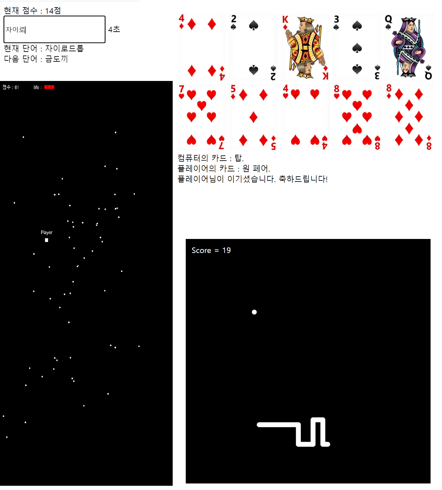

간단한 미니게임을 즐겨봅시다. 왼쪽의 목록에서 게임을 선택하여 게임 화면으로 이동하실 수 있습니다.
미니게임은 총 4종류로, 컴퓨터와 즐기는 포커, 3가지 난이도의 미니 타자 연습, 사방에서 날아오는 탄막 피하기 게임, 맵에 랜덤으로 등장하는 먹이를 먹는 스네이크 게임이 있습니다. 탄막 피하기와 스네이크 게임은 게임 시작 전에 조작 방법을 설명해주니 확인하고 게임을 즐겨주세요.